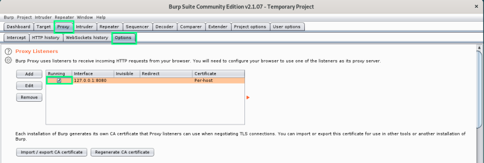
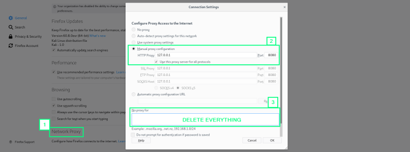
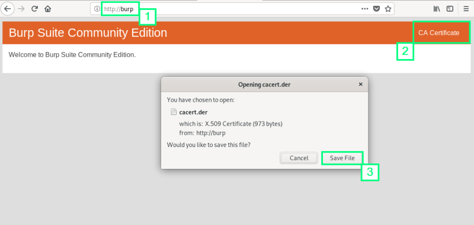
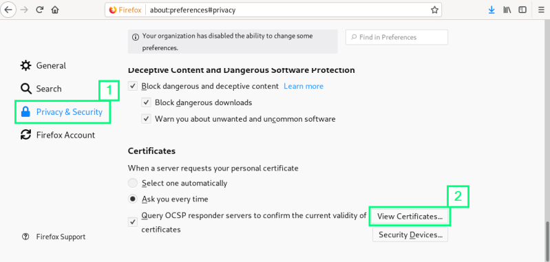
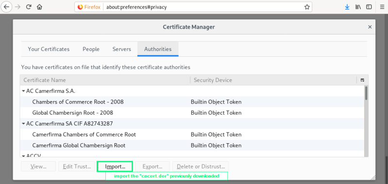
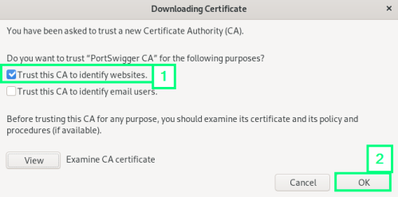

configuration
Burpsuite configuration
Proxy → Options
how start and stop the proxy and configure the
host:port pair on which burpsuite will listen.
default port is
8080 but we can change it if it is already busy

Firefox configuration
• Preferences → Network Proxy →
Manual proxy
configuration  •
Install Burp's CA certificate in firefox:
One of the functions of
SSL is to authenticate
the identity of web servers that your browser communicate with. This authentication process helps prevent one
website from masquerading as another website. In order to intercept traffic between your browser and web servers,
Burp needs to break the SSL connection. This causes an exception(SSL warning) in your browser, because it detects it
is not communicating directly with the authentic web server. To allow HTTPS websites to be loaded properly,
Burp uses its own certificate authority(CA). With this CA Burpsuite creates an SSL certificate for
each host that we visit, and signs these using it's CA certificate.
We have to install Burpsuite's CA
certificate as a trusted root to prevent security warnings.
go to: http://burp
   
{kind=link}
{kind=link}
{kind=link}
{kind=link}